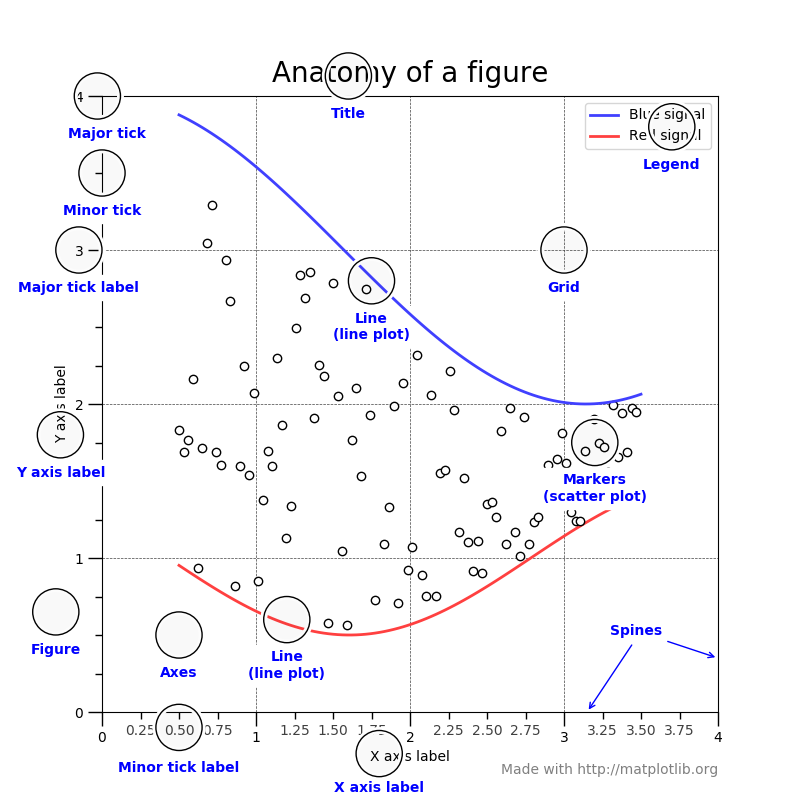

Version 2.1.2
This figure shows the name of several matplotlib elements composing a figure
import numpy as np
import matplotlib.pyplot as plt
from matplotlib.ticker import AutoMinorLocator, MultipleLocator, FuncFormatter
np.random.seed(19680801)
X = np.linspace(0.5, 3.5, 100)
Y1 = 3+np.cos(X)
Y2 = 1+np.cos(1+X/0.75)/2
Y3 = np.random.uniform(Y1, Y2, len(X))
fig = plt.figure(figsize=(8, 8))
ax = fig.add_subplot(1, 1, 1, aspect=1)
def minor_tick(x, pos):
if not x % 1.0:
return ""
return "%.2f" % x
ax.xaxis.set_major_locator(MultipleLocator(1.000))
ax.xaxis.set_minor_locator(AutoMinorLocator(4))
ax.yaxis.set_major_locator(MultipleLocator(1.000))
ax.yaxis.set_minor_locator(AutoMinorLocator(4))
ax.xaxis.set_minor_formatter(FuncFormatter(minor_tick))
ax.set_xlim(0, 4)
ax.set_ylim(0, 4)
ax.tick_params(which='major', width=1.0)
ax.tick_params(which='major', length=10)
ax.tick_params(which='minor', width=1.0, labelsize=10)
ax.tick_params(which='minor', length=5, labelsize=10, labelcolor='0.25')
ax.grid(linestyle="--", linewidth=0.5, color='.25', zorder=-10)
ax.plot(X, Y1, c=(0.25, 0.25, 1.00), lw=2, label="Blue signal", zorder=10)
ax.plot(X, Y2, c=(1.00, 0.25, 0.25), lw=2, label="Red signal")
ax.plot(X, Y3, linewidth=0,
marker='o', markerfacecolor='w', markeredgecolor='k')
ax.set_title("Anatomy of a figure", fontsize=20, verticalalignment='bottom')
ax.set_xlabel("X axis label")
ax.set_ylabel("Y axis label")
ax.legend()
def circle(x, y, radius=0.15):
from matplotlib.patches import Circle
from matplotlib.patheffects import withStroke
circle = Circle((x, y), radius, clip_on=False, zorder=10, linewidth=1,
edgecolor='black', facecolor=(0, 0, 0, .0125),
path_effects=[withStroke(linewidth=5, foreground='w')])
ax.add_artist(circle)
def text(x, y, text):
ax.text(x, y, text, backgroundcolor="white",
ha='center', va='top', weight='bold', color='blue')
# Minor tick
circle(0.50, -0.10)
text(0.50, -0.32, "Minor tick label")
# Major tick
circle(-0.03, 4.00)
text(0.03, 3.80, "Major tick")
# Minor tick
circle(0.00, 3.50)
text(0.00, 3.30, "Minor tick")
# Major tick label
circle(-0.15, 3.00)
text(-0.15, 2.80, "Major tick label")
# X Label
circle(1.80, -0.27)
text(1.80, -0.45, "X axis label")
# Y Label
circle(-0.27, 1.80)
text(-0.27, 1.6, "Y axis label")
# Title
circle(1.60, 4.13)
text(1.60, 3.93, "Title")
# Blue plot
circle(1.75, 2.80)
text(1.75, 2.60, "Line\n(line plot)")
# Red plot
circle(1.20, 0.60)
text(1.20, 0.40, "Line\n(line plot)")
# Scatter plot
circle(3.20, 1.75)
text(3.20, 1.55, "Markers\n(scatter plot)")
# Grid
circle(3.00, 3.00)
text(3.00, 2.80, "Grid")
# Legend
circle(3.70, 3.80)
text(3.70, 3.60, "Legend")
# Axes
circle(0.5, 0.5)
text(0.5, 0.3, "Axes")
# Figure
circle(-0.3, 0.65)
text(-0.3, 0.45, "Figure")
color = 'blue'
ax.annotate('Spines', xy=(4.0, 0.35), xycoords='data',
xytext=(3.3, 0.5), textcoords='data',
weight='bold', color=color,
arrowprops=dict(arrowstyle='->',
connectionstyle="arc3",
color=color))
ax.annotate('', xy=(3.15, 0.0), xycoords='data',
xytext=(3.45, 0.45), textcoords='data',
weight='bold', color=color,
arrowprops=dict(arrowstyle='->',
connectionstyle="arc3",
color=color))
ax.text(4.0, -0.4, "Made with http://matplotlib.org",
fontsize=10, ha="right", color='.5')
plt.show()
Total running time of the script: ( 0 minutes 0.027 seconds)